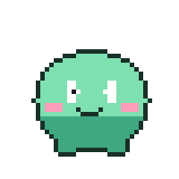
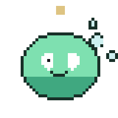

SL-05
gif
Pre-baked pixels in an <img>. No player, no controls, no autoplay
policy to fight — and no way to stop it either. What that trade buys, and where it
stops being the right trade.
GIF
the sticker
A GIF is an <img>. That single fact is most of its value: it
drops into a chat bubble, an email, a markdown README — anywhere an image already goes —
and it plays the instant it is visible, with no controls, no pause button and nothing to
configure. That is also its whole liability: you cannot script it to respect
prefers-reduced-motion short of swapping the file, and a 256-colour palette
makes it a poor fit for anything photographic. It earns its place as a short, iconic,
looping mark — a reaction, a status, a mascot. The four below are one character,
baked once, staged in four real contexts to show what that is good for.
omg no way 😭

sent a sticker
chat reaction
Oversized, self-contained, no chrome — the format chat apps standardised on for exactly this.

processing — 64%
processing indicator
A loop with a legible beginning and end reads as "working," the way a spinner alone doesn't.
 away · back in 20m
away · back in 20m
empty / away state
Low-motion, high-charm — a register a static illustration cannot hold and a spinner gets wrong.
companion — the device
checking
ai companion chat
The device up top is the actual product idea: an always-on tamagotchi-style companion whose screen mirrors whatever's happening in the conversation below it, not a static logo. Everything under it is ordinary messaging-app chrome — header, avatars, a typing input — so the device is what's novel, not the chat itself.
SCOPE.md · slide 05
"Baseline: Video & GIF — pre-baked pixels, no interactivity; visual: thread demo
as GIF and video side by side with file sizes labeled."
SCOPE.md's old slide 4 covered two formats at once; it was split into 4 (video) and
5 (GIF) so each could make its case on its own terms. This page is the GIF half — the sticker, the companion widget and
the agent roster, all real baked assets from gen/. The thread-demo
brandmark resolve is still blocked on the vector-path dependency; the slime and the
icon set are stand-ins built for this page so the argument has something real to
look at meanwhile.